当你不确定你所运行的命令，尤其是那些使用了许多选项的复杂命令时，你会怎么做？在这种情况下，我们使用man pages来获取帮助。还有一些其它的选择可能包括像‘help’，‘whereis’和‘whatis’这样的命令。但是所有的这些既有优点，也有缺点。
当我们浏览man pages来查看选项和帮助的时候，里面的描述实在太冗长了，我们无法在短的时间里理解它的意思。
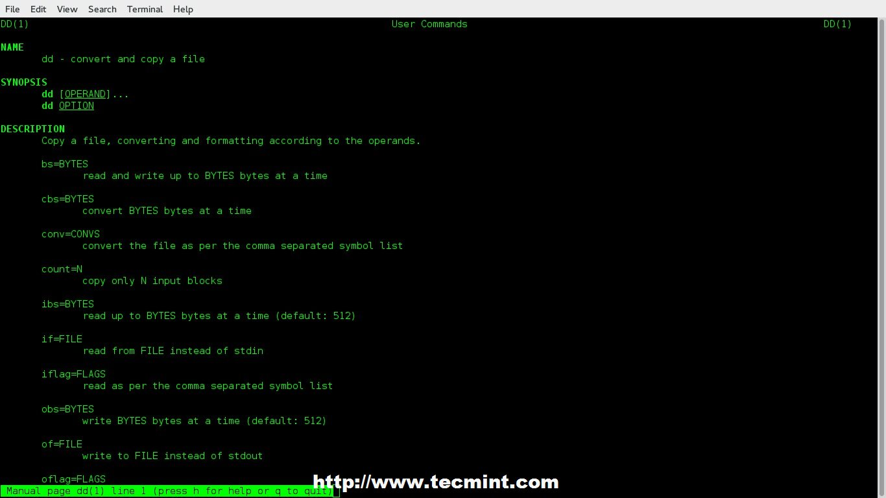Linux Man Pages
同样，‘help’命令可能也不会给你期待的答案。
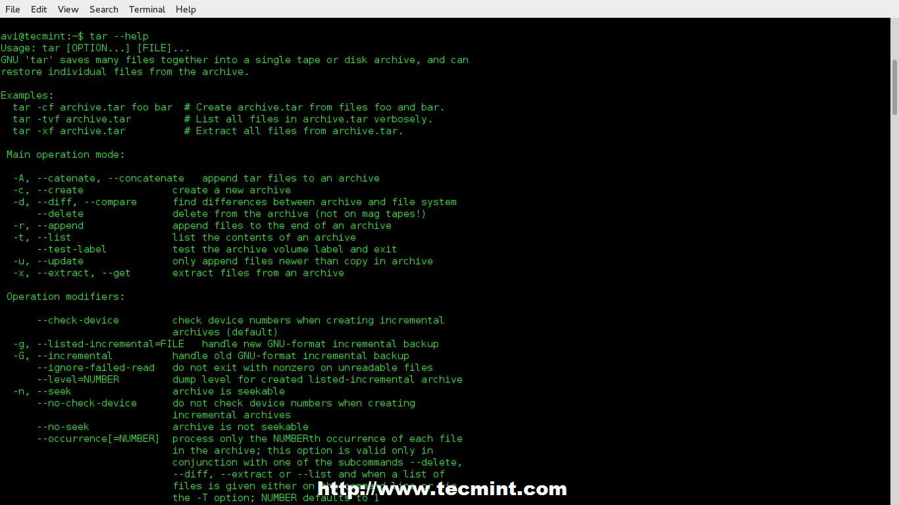Help Command
‘whereis’命令几乎不给你任何信息，除了安装二进制文件的位置（有些时候可能是重要的）
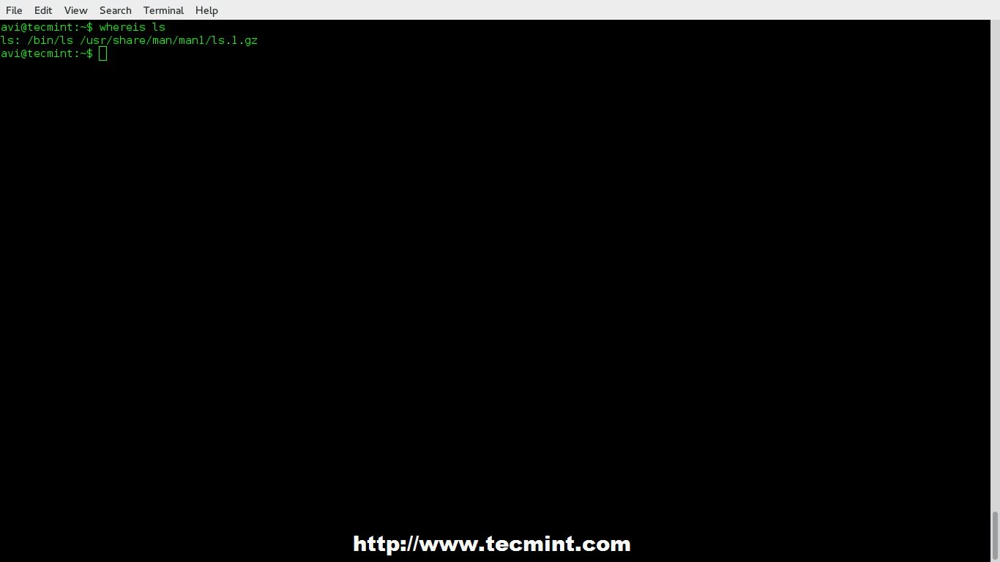Whereis Command
‘whatis’命令给出一套很严格的答案，它除了说出所查询命令的作用，并没有什么太大帮助。而且，它从来不说明可用的选项。
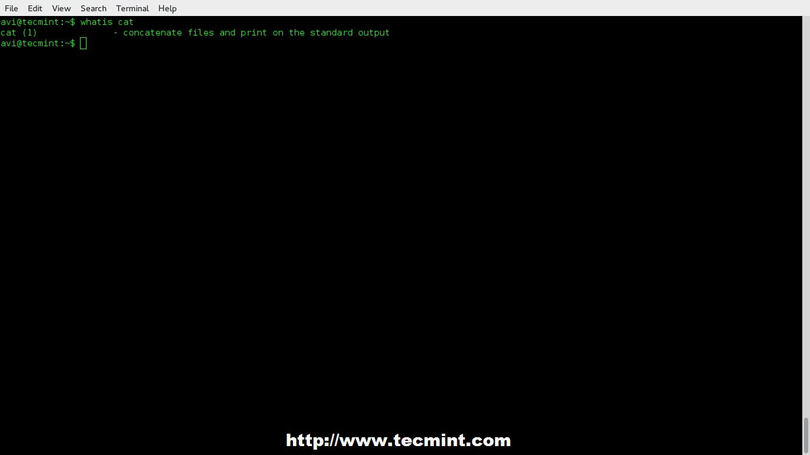Whatis Command
直到在困难中解决问题前，我们已经使用了以上全部选项，但是现在来了一个交互式的备忘录应用程序‘cheat’，它将在其余的命令中脱颖而出。
什么是cheat?
cheat是在GNU通用公共许可证下，为Linux命令行用户发行的交互式备忘单应用程序。它提供显示Linux命令使用案例，包括该命令所有的选项和简短但尚可理解的功能。
Cheat：提供简单命令选项
在Linux系统中安装‘Cheat’
‘Cheat’有两个主要的依赖——‘python’ 和 ‘pip’，在安装‘cheat’之前，确保你的系统安装了python和pip。
Install Python
|
1 2 |
# apt-get install Python (基于Debian的系统) # yum install python (基于小红帽的系统) |
Install Pip
|
1 2 |
# apt-get install python-pip (基于Debian的系统) # yum install python-pip (基于小红帽的系统) |
Note：pip是一个简单的安装替代，是一个有极大改进的Python第三方包安装器。
下载并安装Cheat
我们将通过Git下载‘Cheat’，确保你安装了‘git’包，如果没有最好安装一下。
|
1 2 |
# apt-get install git (基于Debian的系统) # yum install git (基于小红帽的系统) |
接下来，通过运行下面的命令来安装所需要的python依赖包。
|
1 |
# pip install docopt pygments |
现在，复制cheat的Git库
|
1 |
# git clone https://github.com/chrisallenlane/cheat.git |
进入cheat目录，运行‘setup.py’（一个python脚本）。
|
1 2 |
# cd cheat # python setup.py install |
如果安装很顺利，你就能够看到安装在系统上的cheat版本了。
|
1 2 |
# cheat -v cheat 2.0.9 |
cheat的一些必要配置
你必须在‘~/.bashrc’文件里设置‘EDITOR’环境变量，打开用户‘.bashrc’文件，然后把下面这行加入到里面：
|
1 |
export EDITOR = /usr/bin/nano |
你可以使用你喜欢的编辑器来替代‘nano’。保存文件然后退出，再次登录以确保修改生效。
接下来，添加cheat的自动补全特性，来确保不同解释器下命令行的自动补全。为了到达该功能要求，简单地将‘cheat.bash’脚本clone下来，然后复制到你系统正确的路径下。
|
1 2 |
# wget https://github.com/chrisallenlane/cheat/raw/master/cheat/autocompletion/cheat.bash # mv cheat.bash /etc/bash_completion.d/ |
NOTE：团队已经在Git上上传了其他解释器的自动补全脚本，这些都可以被克隆，然后用在不同的解释器上。使用下面的链接，以找到其余解释器的自动补全脚本：
不仅如此，如果需要的话，你也可以使用语法高亮。要想做到这一点，在你的‘.bashrc’文件中添加‘CHEATCOLORS’环境变量。
|
1 |
export CHEATCOLOR=true |
Cheat应用默认只提供最基本和最常用的命令。cheat备忘单的内容保存在~/.cheat/.目录里，我们可以手动在这个目录添加备忘单里面的内容，这样，我们的cheat应用将更强大。
|
1 |
# cheat -xyz |
这将打开xyz备忘单，如果没有的话就会创建一个。备忘单将使用.bashrc里设置的默认编辑器打开，默认编辑器就是在上面.bashrc所设置的。
一些Cheat命令的使用
一个包可以是 *.gz , *.bz2 , *.zip , *.xz，可是什么情况下用哪些选项呢？
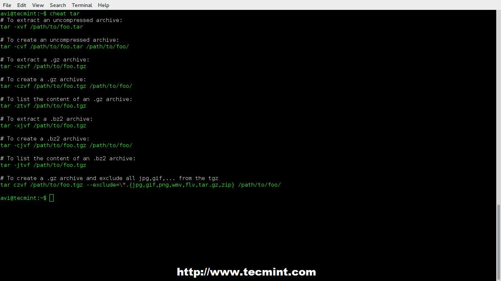tar命令选项
除非在不同的地方咨询和核对后，我才使用dd命令，在此之前，无论我对这个命令多么的肯定，我从不使用它。现在，事情就变得简单多了。
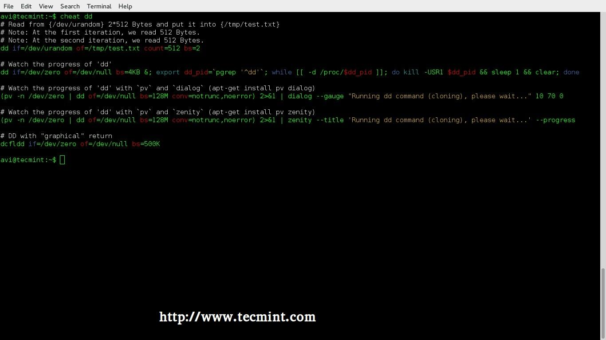dd命令选项
‘uname’命令帮助
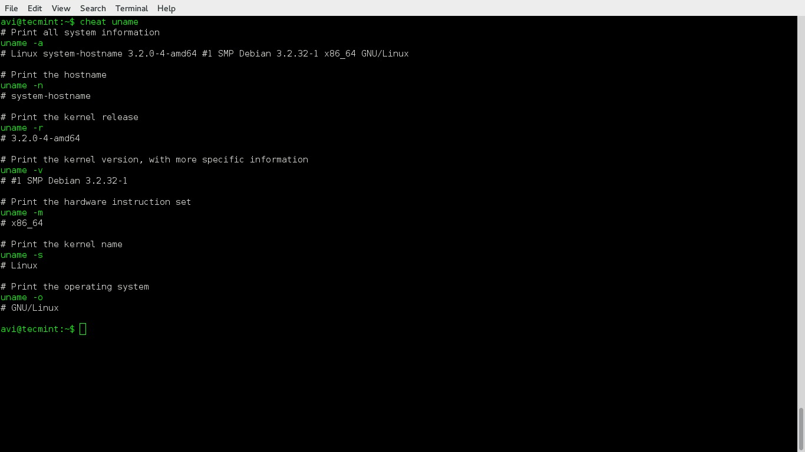uname命令选择
一个简短的ifconfig命令操作教程
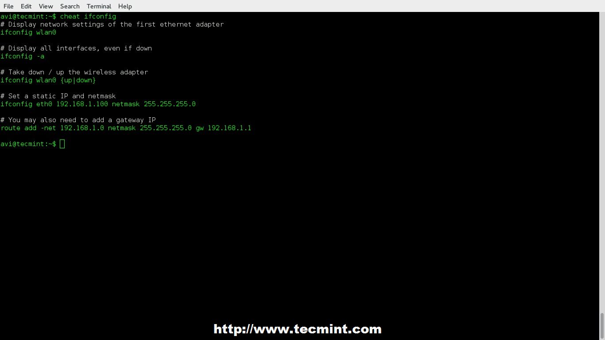ifconfig命令选项
‘top’命令，对管理员和普通用户来说，是最重要的命令之一。
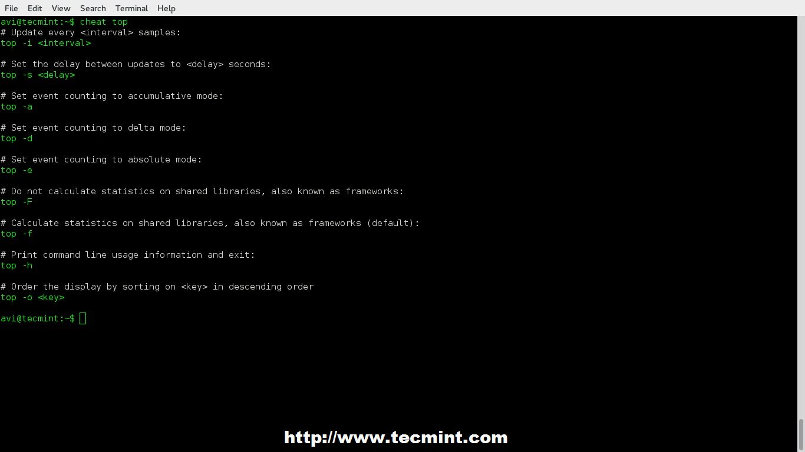top命令选项
我们来骗骗cheat命令，如何（尽管别有意义）？得到一个可用命令的列表，其实就是安装在你系统里的cheat备忘录。
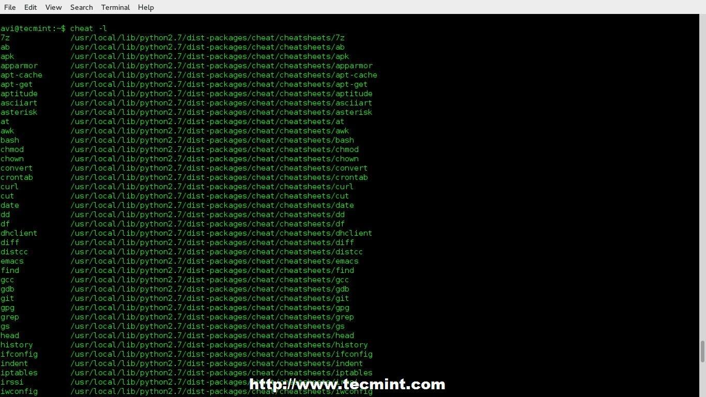列出所有Linux命令
使用关键字搜索备忘单。
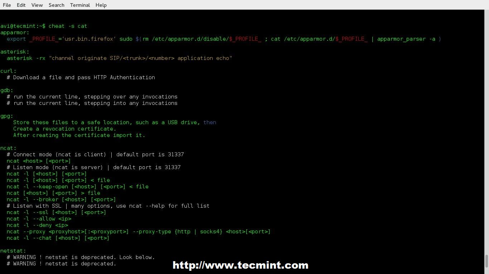搜索备忘单
来看看包含所有命令的内置备忘单。
|
1 2 3 4 |
$ cheat -d /home/avi/.cheat /usr/local/lib/python2.7/dist-packages/cheat/cheatsheets |
复制内置的备忘单到你的本地目录。
|
1 |
# cp /usr/local/lib/python2.7/dist-packages/cheat/cheatsheets/* /home/avi/.cheat/ |
结论
这个超棒的工具在许多情况下担任“救世主”的角色，它给予你需要的信息，信息不冗余，不模糊，相反地，却击中要点。这是每个人都会需要的工具，很简单就能创建、安装，使用和理解，这个工具前途无量。
这个Git仓库已经添加了一个精彩的gag，这里我不打算去解释它，而留给各位来解释。
好了，文章就要结束了，我会带着下一篇你们喜欢的有趣文章回到这里的，在此之前，要时刻关注我们。别忘了在下面的评论部分给我们留下您宝贵的反馈信息。